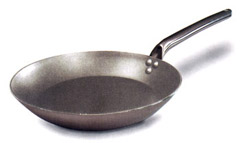
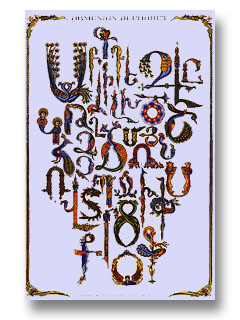

|
What
makes a product "Armenian"?
Our
e-commerce site specializes in Armenian products. You may be asking
yourself what is an "Armenian" product? What is it about a product
that makes it Armenian? Good question! The answer is not as simple
as you might think.
Here
are some reasons why we might call a product "Armenian":
-
It's a traditional Armenian item
- It has some cultural characteristics that are Armenian
- It's made with material/ingredients specific to Armenia
- It uses the Armenian language in some way
You
could also say that it's Armenian if it's "made in Armenia". That's
probably true. But here is an example of something made in Armenia
that our shoppers would not be interested in finding in our site:
|

A frying pan, made in Armenia
|
And here is an item that is not made in Armenia, but that our shoppers
might be interested in:
|

An Armenian alphabet poster - not made in Armenia
|
We
could also think about this question specifically in terms of our
e-commerce site. Shoppers will come to the site looking for products
that they would not easily find in a non-Armenian site. As
we choose our products, and start producing a marketing campaign,
let's think some more about whether our shoppers would consider
each of our items an Armenian product or not.
<<
Click here to go back to the main page <<
|